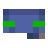

Gameplay · 0.2.1
Souches et capacités
Comparez les douze formulaires intégrés et leurs trois capacités.
Forces et faiblesses
| Souche | Le bien | Le mauvais |
|---|---|---|
|
| |
|
| |
|
| |
|
| |
|
| |
|
| |
|
| |
 Phantom |
|
|
|
| |
|
| |
|
| |
|
|
Clés de capacité et coûts
R se déverrouille au stade II, V au stade III. La capacité maximale sur B nécessite une forme complète et une recherche à 100 %. Le HUD affiche les temps de recharge et les conditions non remplies. Une tentative ratée ne coûte rien.
Blaze, Phantom et Bee peuvent voler à partir du stade IV en appuyant deux fois sur un saut. La fuite utilise la faim et la pluie ou l'eau les immobilise.
Capacités par souche
| Souche | R | V | B (sommet) |
|---|---|---|---|
| Chair morte · Brève régénération et résistance. | Choc au sol · Frappe les ennemis visibles proches, au sol. | La Horde · Lance les zombies proches contre votre dernier agresseur ; n'invoque aucune créature. | |
| Œil mort · Révèle brièvement les créatures vivantes proches à travers les murs. | Salve · Trois flèches en éventail étroit. | Pluie de flèches · Neuf flèches en éventail large. | |
| Décompression · Blesse et repousse les ennemis visibles proches. | Camouflage · Brève invisibilité ; l'armure et les objets tenus restent visibles. | Détonation · Blesse et projette les ennemis visibles proches pour 4 PV ; ne détruit pas de blocs. | |
| Bond · Bond en avant. | Crachat venimeux · Empoisonne une cible visible à huit blocs maximum. | Cocon · Ralentit et affaiblit une cible visible. | |
| Clignement · Saut vers un point sûr dans la direction du regard. | Regard du vide · Ralentit et affaiblit une cible visible. | Effondrement du vide · Attire les ennemis visibles proches et les ralentit. | |
| Élan aquatique · Élan dans la direction du regard sous l'eau. | Remous · Attire les ennemis visibles proches. | La Marée · Blesse et ralentit les ennemis visibles proches. | |
| Boule de feu · Une petite boule de feu. | Salve de feu · Trois boules de feu en éventail. | Fournaise · Brûle et repousse les ennemis visibles proches. | |
| Phantom | Battement d'ailes · Battement vers le haut et brève chute lente. | Voile nocturne · Brève invisibilité dans l'obscurité ; l'équipement reste visible. | Piqué · Piqué vers une cible visible ; dégâts seulement au contact. |
| Battement d'ailes · Battement vers le haut et brève chute lente. | Dard · Empoisonne une cible visible à trois blocs maximum ; coûte 1 PV. | L'Essaim · Lance les abeilles proches contre votre dernier agresseur ; n'invoque aucune créature. | |
| Flair · Révèle brièvement les créatures vivantes proches à travers les murs. | Morsure bondissante · Bond sur une cible visible ; morsure seulement au contact. | La Meute · Lance les loups proches contre votre dernier agresseur ; n'invoque aucune créature. | |
| Furie · Brève force et vitesse. | Charge · Charge au sol vers une cible visible ; dégâts seulement au contact. | Bande de guerre · Lance les piglins proches contre votre dernier agresseur ; n'invoque aucune créature. | |
| Sonar · Révèle brièvement les créatures vivantes proches à travers les murs. | Rayon · Blesse une cible visible à seize blocs maximum. | Malédiction de l'ancien · Blesse, ralentit et épuise les ennemis visibles proches. |